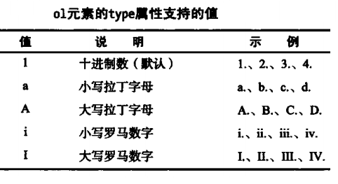

组织文档内容结构
HTML要求浏览器将连在一起的几个空白字符折算为一个空格。因此需要对文档内容进行合理的布局才能显示出想要的效果。1、建立段落
使用p标签，<p></p>，习惯样式：p{display:block;margin-before:1em;margin-after:1em;margin-stare:0;margin-end:0;} p标签常用样式设置示例：首行缩进、首字下沉。2、使用div元素
块级元素，常用于盒子模型布局3、使用预先编排好格式的内容
pre元素阻止合并空白字符，保留原文档格式，常用于包含程序代码。习惯样式：pre{display:block;font-family:monospace;white-space:pre;margin:1em 0;}4、引用他处内容
blockquote元素表示引自他处的一片内容，类似于q元素，但引用内容更多。局部属性cite指定内容来源。5、添加主题分隔
hr元素代表段落级别的主题分隔，单标签，表现为一条横贯页面的水平线6、使用列表
6.1、有序列表 习惯样式：ol{display:block;list-style-type:decimal;margin-before:1em;margin-after:1em;margin-stare:0;margin-end:0;padding-stare:40px;} start属性设定列表首项编号值，type属性用于设置编号类型，reversed属性设置编号降序，暂无主流浏览器支持该属性。  有序列表的列表项使用li元素来表示，示例：
代码： <ol> <li>冠军</li> <li>亚军</li> <li>季军</li> </ol>
效果：
6.2、无序列表
习惯样式：ul{display:block;list-style-type:disc;margin-before:1em;margin-after:1em;margin-stare:0;margin-end:0;padding-stare:40px;}
6.3、li元素
习惯样式：li{display:list-item;}，与ul、ol、menu(暂无主流浏览器支持menu)元素搭配使用，表示一个列表项，局部属性value可用来生成不连续的有序列表。
代码： <ol> <li>冠军</li> <li value="4">亚军</li> <li>季军</li> </ol>
效果：
6.3、说明列表
使用3个元素，dl(表示3、说明列表列表)、dt(表示术语)、dd(表示术语定义)
习惯样式：dl{display:black;margin-before:1em;margin-after:1em;margin-stare:0;margin-end:0;}、dt{display:block;}、dd{display:block;margin-stare:40px;}
dl中可嵌入多个dt、dt下面亦可插入多个dd，常用于名词解释或图文混排
代码：
<dl>
<dt>Apple</dt>
<dd>The apple is the pomaceous fruit of apple tree.</dd>
<dd><i>Malus domestica</i></dd>
<dt>Banana</dt>
<dd>The banana is the parthenocarpic fruit of banana tree.</dd>
</dl>
效果：
7、使用插图
H5定义插图(figure)：一个独立的内容单位，可带标题 figure元素表示插图，习惯样式：figure{display:black;margin-before:1em;margin-after:1em;margin-stare:40px;margin-end:40px;} 可包含一个figcaption元素，表示插图的标题，其必须为figure的第一个或最后一个子元素，习惯样式：figcaption{display:black;}